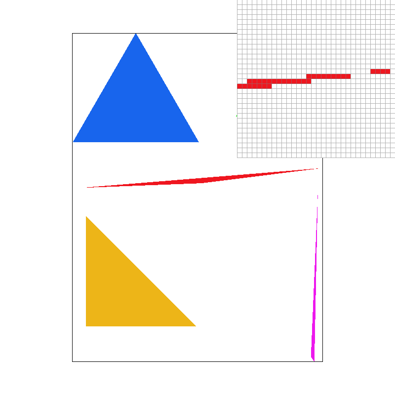
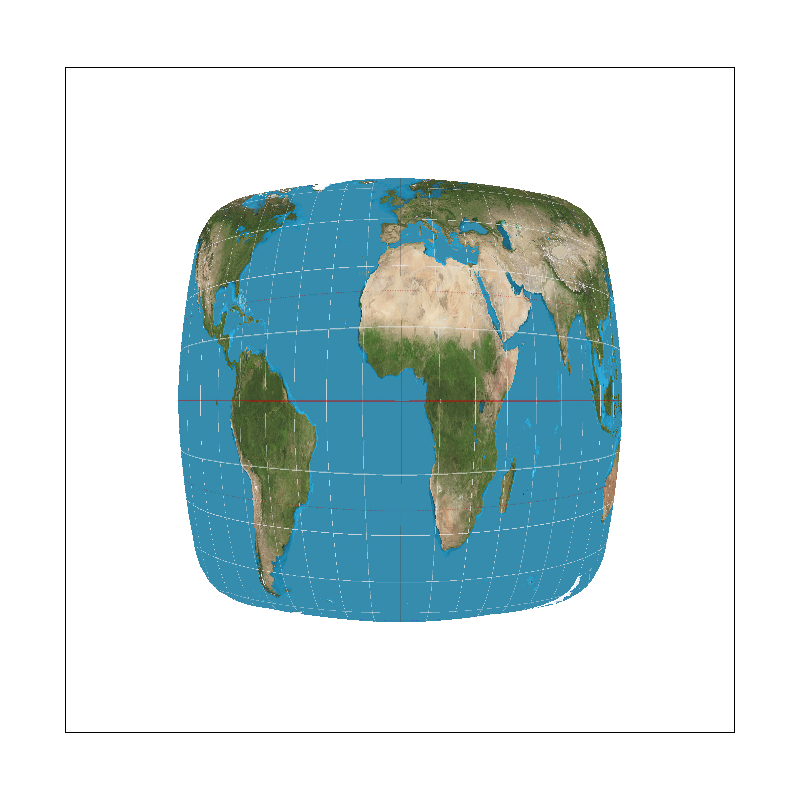
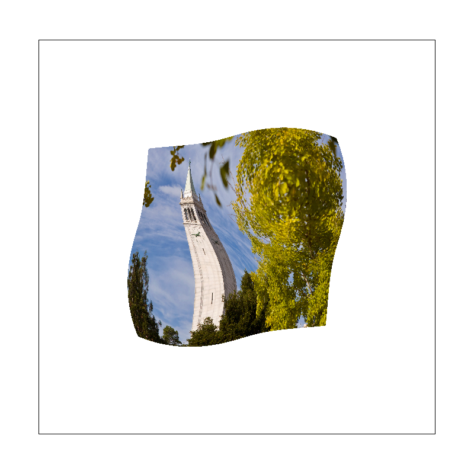
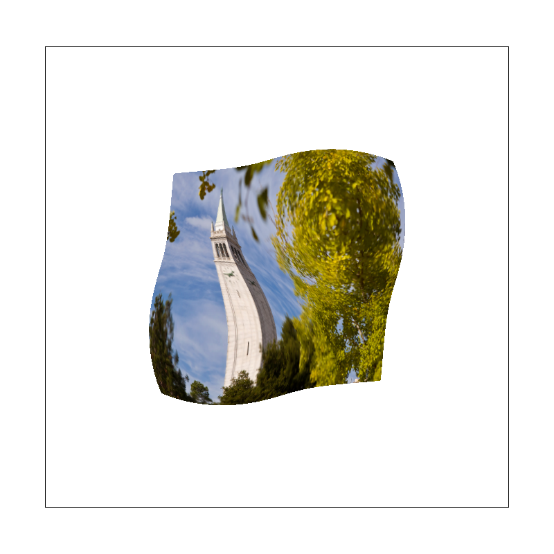

CS184/284A Spring 2026 Homework 1 Write-Up
Link to webpage: cal-cs184-student.github.io/hw-webpages-Hanson1331/hw1/
Link to GitHub repository: github.com/cal-cs184-student/hw1-rasterizer-comet-azur
Overview
In this homework I built a complete 2D SVG rasterizer from scratch. Starting from raw triangle rasterization, I progressively added supersampling for antialiasing, 2D affine transforms, barycentric color interpolation, texture mapping with nearest-neighbor and bilinear pixel sampling, and finally mipmap-based level sampling (including trilinear filtering). The most interesting insight was how each technique addresses aliasing at a different stage of the pipeline — supersampling combats jaggies at the geometry level, bilinear sampling smooths texture lookups, and mipmaps prefilter textures to avoid flickering from minification. Seeing these methods interact and compose was a great illustration of how real-time rendering pipelines work.
Task 1: Drawing Single-Color Triangles
My rasterization algorithm works as follows. Given three vertices, I first compute the axis-aligned bounding box of the triangle by taking the min and max of all x and y coordinates, then clamp to screen bounds. I then iterate over every integer pixel (x, y) within that box and test whether the pixel center (x + 0.5, y + 0.5) lies inside the triangle using the edge function test. For each edge from vertex A to vertex B, the signed edge function \( E(P) = (P_x - A_x)(B_y - A_y) - (P_y - A_y)(B_x - A_x) \) gives a positive value when P is on the left side of the directed edge. A point is inside the triangle when all three edge function values have the same sign as the triangle's total signed area. Using ≥ rather than > ensures boundary pixels are included. Both clockwise and counter-clockwise winding orders are handled by checking the sign of the triangle area and flipping the comparison accordingly.
This algorithm is no worse than one that checks every sample within the bounding box, because it does exactly that — it only iterates over pixels within the tight axis-aligned bounding box of the triangle, never touching pixels outside it.
Screenshot of basic/test4.svg with pixel inspector on a skinny triangle corner:
Task 2: Antialiasing by Supersampling
Supersampling works by treating the framebuffer as a higher-resolution image. For a sample rate of
k = n², each pixel is divided into an n×n subgrid and sampled at each subcell center.
I store these subsamples in a sample_buffer of size width × height × sample_rate.
The rasterization inner loop iterates over the n×n subsamples per pixel; each subsample at position
\((x + \frac{s_x + 0.5}{n},\; y + \frac{s_y + 0.5}{n})\) is tested against the triangle and written to the
buffer if inside. At the end of the frame, resolve_to_framebuffer() averages all subsamples
for each pixel and converts to 8-bit color.
Supersampling is useful because it combats aliasing — thin features like narrow triangle tips may miss a
pixel center entirely at 1 sample/px, causing them to disappear. With more samples per pixel, partial
coverage is captured and averaged into a grey value, producing smooth edges instead of harsh jaggies.
Points and lines are handled by writing the same color to all subsamples of a pixel via the updated
fill_pixel().
At sample rate 1 (left), narrow triangle corners show hard jaggies and disconnected pixels. At rate 4 (center), edges are smoother and thin corners start to appear. At rate 16 (right), coverage is averaged over 16 subsamples, producing very smooth antialiased edges. The improvement occurs because more subsamples capture finer partial coverage information that gets blended into the final pixel color.
|

|
|
|
Task 3: Transforms
I implemented the three standard 2D homogeneous transformation matrices: translate(dx, dy)
builds a matrix that shifts points by (dx, dy); scale(sx, sy) scales axes independently;
and rotate(deg) converts degrees to radians and constructs a standard counter-clockwise
rotation matrix. All three produce 3×3 matrices operating in homogeneous coordinates so they can be
composed by multiplication.
For my modified robot (my_robot.svg), I posed cubeman with one arm raised up in a wave,
achieved by applying a rotation transform to the upper arm segment and adjusting the lower arm accordingly.
Task 4: Barycentric coordinates
Barycentric coordinates are a way of expressing any point inside a triangle as a weighted combination of its three vertices. Given vertices A, B, C, any interior point P can be written as \( P = \alpha A + \beta B + \gamma C \) where \(\alpha + \beta + \gamma = 1\) and all three weights are non-negative. Each weight measures how "close" the point is to the opposite vertex — for example, \(\alpha\) is large when P is near A and small when P is far from it. This makes barycentric coordinates ideal for interpolating per-vertex attributes: to get the color at P, we simply compute \( C_P = \alpha C_A + \beta C_B + \gamma C_C \).
A good intuition is to imagine a triangle where vertex A is red, vertex B is green, and vertex C is blue. A point exactly at A has \(\alpha=1, \beta=0, \gamma=0\) so it is pure red. A point at the midpoint of edge BC has \(\alpha=0, \beta=0.5, \gamma=0.5\) so it blends green and blue into cyan. Points in the interior blend all three colors proportionally to their barycentric weights, producing a smooth gradient across the face of the triangle.

Task 5: "Pixel sampling" for texture mapping
Pixel sampling is the process of determining what texture color to use for a given screen pixel. When a textured triangle is rasterized, each screen sample is mapped to a UV coordinate in texture space via barycentric interpolation of the per-vertex UV coordinates. We then look up the texture color at that UV position — but since UV coordinates are continuous and texels are discrete, we need a sampling strategy.
Nearest-neighbor sampling simply rounds the UV coordinate to the closest texel and returns its color. It is fast but can produce a blocky appearance when the texture is magnified, and aliasing artifacts when minified.
Bilinear sampling instead takes the four texels surrounding the UV coordinate and interpolates between them using the fractional parts of the texel coordinate — first linearly in x across the two top texels and two bottom texels, then linearly in y between the two results. This produces much smoother transitions and removes the blocky look at the cost of four texture fetches per sample.
The difference between nearest and bilinear is most pronounced when the texture is magnified (each texel covers many pixels) — nearest shows hard blocky boundaries between texels while bilinear blends them smoothly. At high supersampling rates both methods improve, but bilinear retains its smoothing advantage.
|

|
|

|
|
Task 6: "Level Sampling" with mipmaps for texture mapping
Level sampling selects which mipmap level to sample from based on how much the texture is being minified at a given screen location. When a textured surface is far away or at a steep angle, many texels map to a single pixel, causing aliasing if we sample from the full-resolution texture. Mipmaps prefilter the texture at progressively halved resolutions; by choosing an appropriate level we sample a prefiltered version that avoids this aliasing.
The mipmap level D is computed from the screen-space UV derivatives: we compute the UV coordinates at the current sample and at the neighboring pixel positions (x+1, y) and (x, y+1), scale the difference vectors by the texture dimensions to get (du/dx, dv/dx) and (du/dy, dv/dy) in texel units, and then apply the formula \( D = \log_2\!\max\!\left(\sqrt{(du/dx)^2 + (dv/dx)^2},\; \sqrt{(du/dy)^2 + (dv/dy)^2}\right) \).
- L_ZERO: always samples from mipmap level 0 (full resolution). Fast, no extra memory reads beyond the base texture, but causes aliasing when minified.
- L_NEAREST: rounds D to the nearest integer level and samples there. Better aliasing control with minimal overhead — one texture fetch at a coarser level.
- L_LINEAR (trilinear when combined with P_LINEAR): interpolates between the two adjacent mipmap levels using the fractional part of D. Produces the smoothest result but requires two texture fetches per sample.
Tradeoffs: Increasing samples per pixel (supersampling) gives the best antialiasing quality but multiplies memory and computation by the sample rate. Bilinear pixel sampling adds minimal cost (4 fetches vs. 1) and smooths magnification well but does not help with minification aliasing. Level sampling with mipmaps adds ~33% memory overhead for the mipmap pyramid and requires computing UV derivatives per sample, but very effectively reduces minification aliasing with little per-sample cost. Combining all three (high supersampling + bilinear + trilinear) gives the highest quality at the highest cost.
|

|
|
|
|

|
(Optional) Task 7: Extra Credit - Draw Something Creative!
I created a Chinese Spring Festival scene featuring a traditional red lantern with the character "春" (Spring), colorful fireworks in the night sky, silhouette buildings with warm window lights, and scattered stars.
The SVG was procedurally generated using a Python script (src/gen_lantern.py). The lantern body
is an ellipse approximated by 32 colortri fan segments with a bright red-orange center fading
to darker red at the edges, surrounded by a soft glow halo of 32 additional gradient triangles. The "春"
character is rendered as gold polygon strokes (horizontal bars, a vertical connector, diagonal
撇/捺 strokes, and the 日 radical). Fireworks are bursts of narrow colortri rays radiating
from center points, with bright centers fading to dark tips. Buildings are dark polygon
silhouettes with pointed roofs and warm golden window lights. The entire scene contains 266 triangle/polygon
elements.